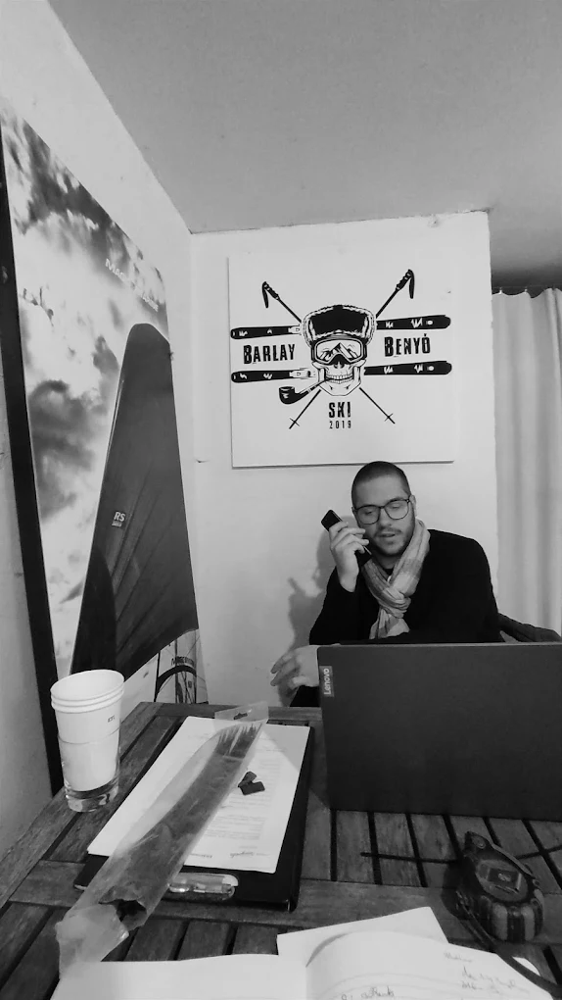

Barlay Benyó Ski — MOM Park felett
Felszerelés és szerviz, ahogy két régi síelő csinálja.
Síkölcsönzés, hódeszka- és e-bike bérlés, valamint precíz élezés-waxolás — egy budapesti műhelyben, 2019 óta.

A Barlay Benyó mögött
Szia, Barlay és Benyő vagyunk
Régen együtt síeltünk — aztán úgy döntöttünk, hogy amit a hegyen és a pályán megtanultunk a felszerelésről, azt átadjuk másoknak is. Így született meg 2019-ben a Barlay Benyó Ski.
Tudjuk, milyen érzés, amikor egy jól beállított léc egyszerűen viszi az embert, és azt is, mennyire el tud rontani egy napot egy életlen él vagy egy rosszul beállított kötés. Ezért minden lécet úgy szervizelünk, mintha a sajátunk lenne.
A kölcsönzőben pedig olyan felszerelést adunk ki, amit mi magunk is szívesen felvennénk — legyen szó egy hétvégi alpesi kiruccanásról vagy egy hódeszkás napról a hegyen.
Barlay & Benyő — alapítók
Amiben segítünk
Kölcsönzés és szerviz, egy helyen
Felszerelés kölcsönzés
Sí, hódeszka és e-bike kölcsönzés napra, hétre vagy egész szezonra — mindig karbantartott, induláskor szerviz kész állapotban.
Nézd meg a bérléstSíszerviz
Élezés, waxolás, talpfeltöltés és kötésbeállítás — két egykori versenyző szemével, kézi munkával.
Nézd meg a szerviztVélemények
Amit a vendégeink mondanak
Hamarosan: valódi visszajelzések a Facebook és Instagram oldalunkról.